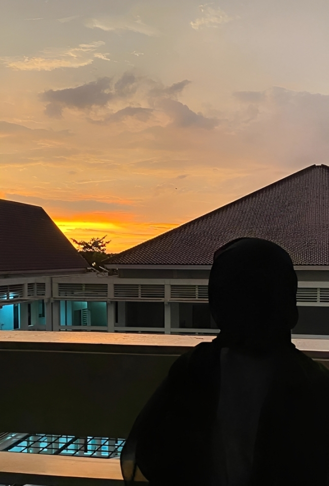
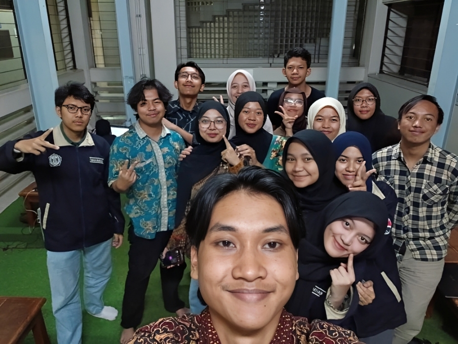
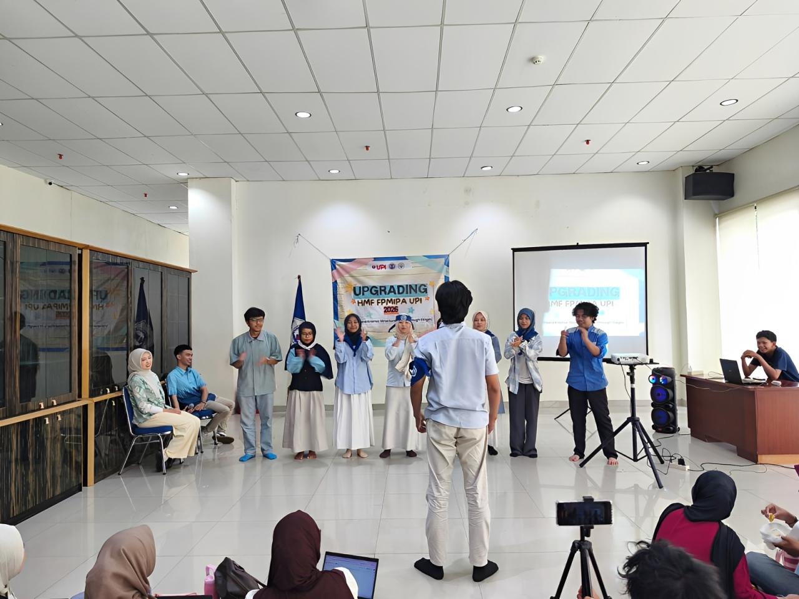
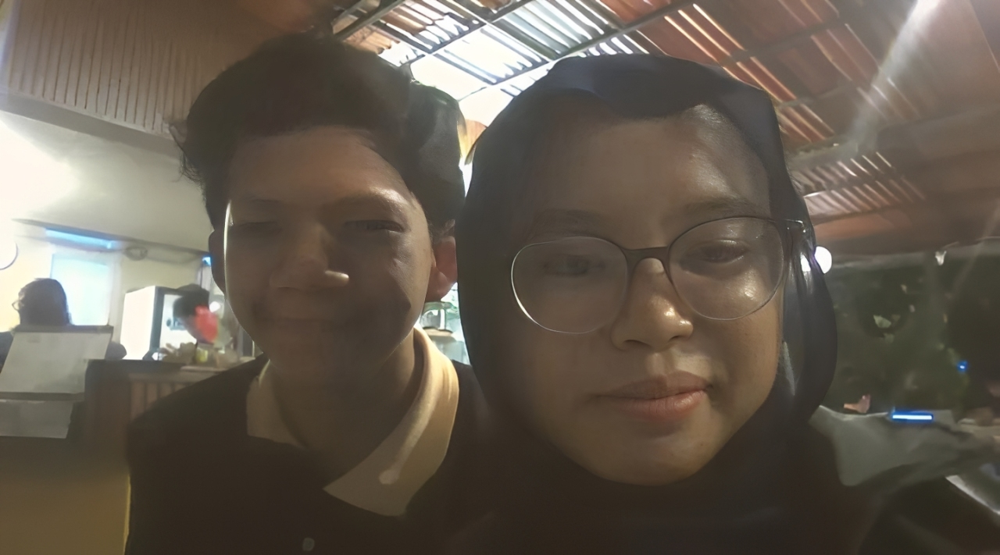
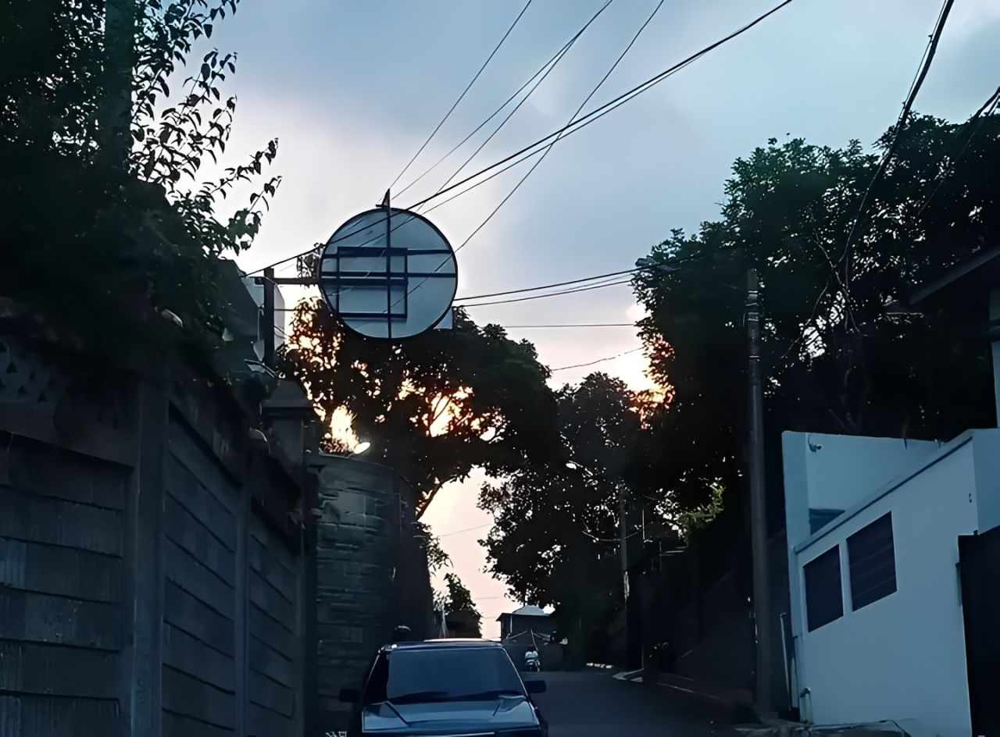

Memory Gallery
Beberapa potongan kecil yang mungkin sederhana, tapi tetap layak disimpan.
💙

Langit dan Teteh
Langitnya bagus
Kebetulan ada orang yang lagi ngeliat langit yang sama

Satu bidang banyak cerita
tetap bersama dan tetap ribut, malah aneh rasanya jika tidak ribut

Hari yang Ramai
Salah satu hari yang paling seru meski pulangnya lebih cape daripada biasanya

Rumah Kecil
Ada yang berubah jadi jauh, tapi tidak jadi asing.

Satu foto
foto dulu abis jadi mas mas servis laptop

jalan pulang
Langitnya cantik. Ternyata harinya juga.